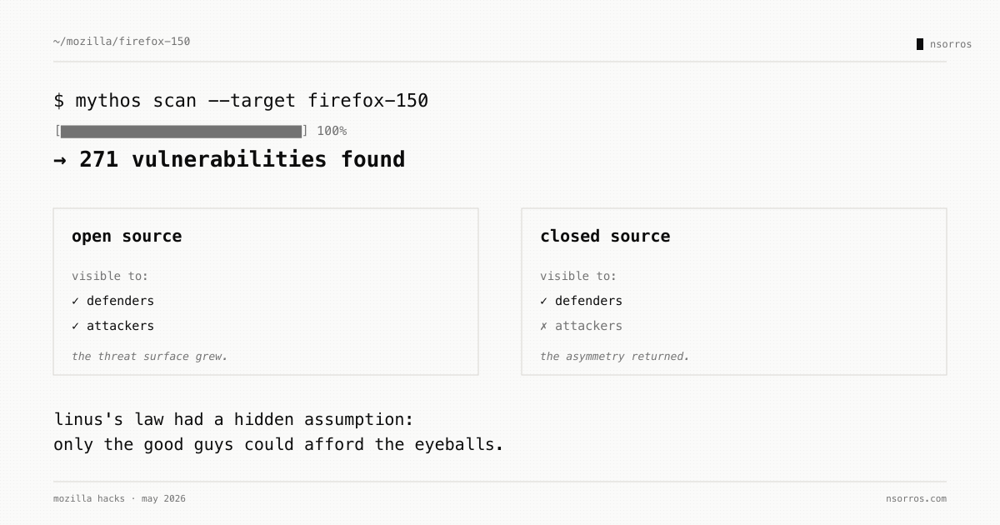

Mythos and Firefox
Has AI just inverted open source's security advantage? 🔒
Mozilla just published a remarkable post: 271 security bugs in Firefox 150, identified by Claude Mythos Preview running inside an agentic harness.
Two things stand out.
First, Mythos is real. The "AI as a serious code auditor" story has been told for two years, mostly aspirationally. 271 production bugs in a browser used by hundreds of millions is not a benchmark — it is a result. And the harness validates each finding before a human looks at it. No false-alarm flood.
Second, and more uncomfortable: the same setup works for attackers.
For two decades, open source has leaned on Linus's law — given enough eyeballs, all bugs are shallow. Many reviewers, many bugs found, many fixes shipped. That was a defender's advantage.
AI is the new eyeballs. But this time the eyeballs are available to both sides. And there is an asymmetry that did not exist before:
→ Open source code: visible to every attacker's Mythos run. → Closed source code: only the defender's Mythos can scan it.
For the first time, public code may be a security liability rather than an asset. The 271 Firefox bugs are the ones Mozilla found first. The bugs they did not find first are the ones we should worry about.
This does not collapse the open source model. But the calculus has shifted. Projects that used to lean on community review now need an in-house AI auditing pipeline running at least as fast as their adversaries.
In the age of AI writing, reviewing and attacking code — the question is not whether AI security tools work. It is whether you are running them first.
